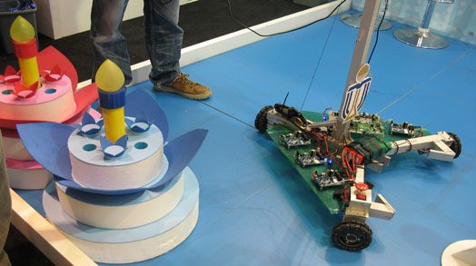
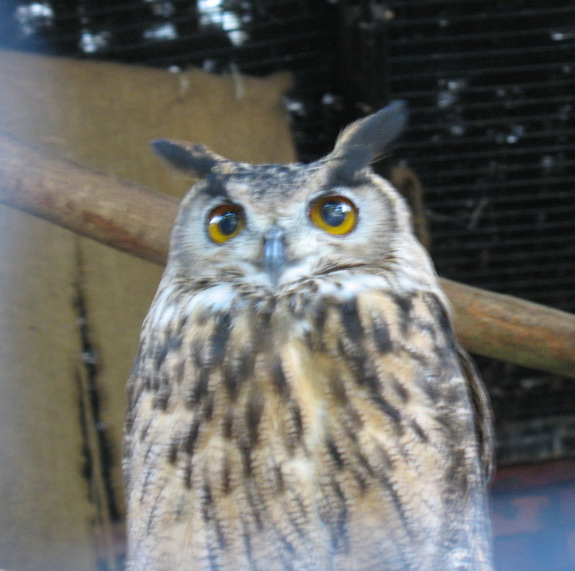
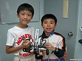

08.04.2012 六柱石群、吊鐘洲、橋咀洲之旅


18.03.2012 維園花展
一早到了維園......
05.11.2011 到科學園
今日同 Jeffrey 到科學園做義工, 由2:00-6:30pm, 負責解釋和控制機械人, 他話很忙,
休息都冇時間, 話做嘢很辛苦!! 可能見佢哋小朋友玩咁大駕車, 吸引了ATV拍攝,
上了6點新聞報告!!

30.09.2011 遊歷史博物館
20.04.2011 遊辛亥革命展覽
25.05.2011 Exhibition at School Hall
06.12.2010Camping
今次的目的地係 Pui O Beach, Lantau Island 's TreasureIsland, 我一早就問亞姐借sleeping bag and sleep mat, 今次要訓地下, Jeffrey話這次去Camp很辛苦, 沖涼要一齊沖, 夜晚又訓得唔好, 但都很好玩, 都沒有唔見嘢呢!
16.11.2010遊嘉道理農場
嘉道理農場的名我就聽得耐, 但從來未去過, 裡面原來好大, 路牌不很清楚, 我和七位小朋友一起沿著路線圖參觀, 結果都能平安準時完成, 看到貓頭鷹、松鼠、野豬和大肥豬,我們運動了一天!

15.11.2010學吹單黃管
聽真D啦!
14.11.2010機械人學堂
每星期都教一樣電子工具和拍照!
22.10.2010台北之旅
四天的行程在雨中度過了, 窗外的景物很模糊, 這裡很快就黑, 感到台灣好像一個大澳門, 市容較為簡陋, 人不算很多, 原來台灣是香港的35 倍而台北市已是香港的6 倍, 我相信今次只是走馬看花, 每處都只停一小時, 最難得是遇到故宮博物院 、101 大樓、中正紀念堂、和在郊野浸溫泉, 其實台灣真是一個寶島, 有好多嘢食!
11.09.2010雨天打足球
今午要打區賽總決賽, 上兩星期已經贏了四場, 如果今次又取勝可以代表荃灣區出線。結果勝一場, 但最後輸了給啡衫隊, 獲得亞軍, 好在都有獎牌囉。這個獎真是得來不易, 淋雨淋足三個鐘, 自問也受不住!!
之前他問我做咩可囉金牌, 今次他明白了, 原來要付出好多, 他看到隔離囉住個金, 黙黙望吓又望吓自己手上得個銀, 都一樣開心, 他好像想到金真係唔易囉, 要有實力, 自己還未夠呢!
11.08.2010奇幻3D大宅
之前在網上看到3D畫, 覺得香港為何沒有? 現在可在四幅來自名家的3D作品拍照, 真 難 得!
02.08.2010動漫電玩節
我們是第一次去動漫節, 同小朋友去原來可以行特別通道, 快好多,裡面都是熟悉的卡通人物。Lego館一定要去,砌成很多香港D嘢
圖片。
01.08.2010彈弓飛人和閃轉霓裳
31.07.2010叮噹來了!
叮噹已四十年了, 館內許多展覽品都是從日本運來的, 最特別是參觀叮噹屋子, 非常有趣
圖片。
24.07.2010玩機械人
今個暑假Jeffrey參加了機械人班, 教他用光感應器、齒輪、馬達, 他很喜歡玩這些東西。我們到九龍灣綜合大樓一起玩, 要用廿分鐘自己砌車比賽, 我感到非常陌生, 從來未想到Lego可以走動, 幸好都能有車參賽!圖片
06.07.2010 踏滑板車
放暑假了, 黃昏時 Jeffrey 就玩scooter, 比較輕便!
06.06.2010 新聞報導
|
reporter |
Camera man |
|---|
22.05.2010 自己畫蛋糕
就是在峄仔和家瑩生日中,我們 一起創作蛋糕的圖樣, 很有趣味!
|
|
|
|
(請Click手看他們做D咩)
24.04.2010 清明上河圖
這幅畫長逾100呎,由28幅紙雕畫組成,接著就會送往上海博覽會展出,手工真是很細緻! Jeffrey有機會參與工作坊, 學做一幅卡通立體畫, 教師是講普通話, 他們都很奇怪他聽得懂呢!寶隆中心的 Paintball Game
Joshwa 今年生日邀請 Jeffrey 到生日Party, 他們玩射 paintball, 要穿上全身裝備，每人可發１５０塊子彈，射中好像蚊虰， 他們很喜歡玩， 而且預約了暑假再玩呢！
我們早上7:30出發到大學站, 下著微雨, 要步行到碼頭, 向印塘海峽出發。
香港有六個地質公園, 今次我們去看了三個, 有赤印(沿岸的石都是赤色)、有荔枝窩( 島上有棵通心樹、五指樟和仙藤)，三就是東平洲的頁岩, 雖然船程要三小時, 令人頭昏腦脹, 但是這樣的奇景真是難得一見, 原來香港都有原始的風景, 叫人驚訝!! 圖片他出門時話有D驚, 回來就話好玩! 不過有口爛、手損、個身臭, 晚上有人拷門又驚, 半夜三點起咗身, 他真很倦! 他喜歡在家多過去 camp, 這裏許多嘢要自己做, 我覺得他變得聽話了。
30.01.2010 西九海濱長廊
我們到了西九踏單車, 原來這地就近圓方ice rink 出口, 這裏裡很幽靜, 最特別是在這市區裏有一條彎曲望海的單車徑, Jeffrey 很開心, 他未曾在單車徑玩過, 我們還看到直升機下降, 真是很大塵!
16.01.2010 上山頂
下午我帶 Jeffrey 乘坐 Peak Tram 到山頂去,剛剛又遇上高鐵示威, 我們便去看看, 發覺都很和平, 山頂的夜影仍然很迷人, 但很冷, 媽又打電話來話山下很亂, 晚上親眼看到十多輛警車和防衛警察, 才感到心寒! 便立即回家。
25.12.2009 聖誕節有火雞食
這裡要用望遠鏡才能看到鳥, 四處都是水, 感覺是在水田上行走, 太陽很接近大地, 很有趣, 我們見到小紅蟹和水蓮, 貝貝也住在這裡, 裏面有大家樂, 好似一個飯堂, 我們吃飯後, 才回家去。
19.12.2009 科學館
在中国野生動物標本展中, 見到已絕種和極卮動物,有中華鱘、雪豹、金鵰和揚子鱷, 栩栩如生, 很可怕!
今天我們到文化中心看藝術表演, 很精彩, jeffrey 很喜歡打拍子,所以都很開心, 這次是他第一次看大型表演。
晚上要表演, 是否很駭人的樣子呢, 全班都化成黑黝黝的, 用這方法表達出光。旁邊是上年的表演African Song, 他做一隻斑馬, 又要講嘢。
23.10.2009 Noah's Park
我們到了馬灣的挪亞方舟, 首先要購買入場券, 地方玩樂主要是在荒舟裏, 這裡較適合小朋友, 學術性高, 動物很真很有趣, 但方舟內不可拍照。
圖片